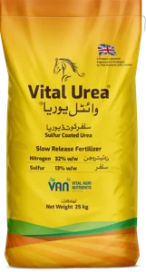

Our brands / Nitrogen / Vital Urea
Nitrogen · Hero productVital Urea
Sulfur Coated Urea. N 32% min · S 13% min
Vital Urea: nitrogen with a sulfur coating, 32% N and 13% S. In Pakistan’s alkaline, hot soils a large share of plain urea’s nitrogen is lost before the plant can use it. Vital Urea’s sulfur coating releases its nitrogen over about 3 to 18 days after the first irrigation, not all at once. As the sulfur oxidises it lowers the pH around the granule, which may help nearby phosphorus and zinc.
Above pH 8, part of the surface urea is lost as ammonia.
Punjab soil testing programme · 36 district workbooks · 770,160 valid samples · c. 2016–2018. The figure describes the soil. It is not a claim for the product.

guaranteed analysis, at least 8.0 kg of nitrogen and 3.25 kg of sulfur in every 25 kg bag
to full release after the first irrigation, 7 to 8 days typical. Release starts 12 to 36 hours after water arrives. VAN field observation, not a laboratory curve
Pakistan Patent on the sulfur-coating technology. Government of Pakistan Patent Office
PSQCA standard · licence CM/L-4126/2025 · released through VAN’s PNAC-accredited laboratory, LAB 336
Only about a quarter of applied nitrogen ends up in Pakistan’s crops.
Nitrogen loss in Pakistani soil is caused by soil chemistry. Volatilisation, nitrification and leaching all act on nitrogen that is dissolved in the soil solution, and a granule of plain urea dissolves all at once, on ground that is hot and alkaline. Nitrogen still inside a granule is not yet in the soil solution, so it cannot yet be lost. The rest of this page follows from that.
The full case for moving off plain urea, with its sources, is on the national picture page. This page is about the coating: what it does, what it cannot do, and why it is made of sulfur.
Share of applied nitrogen taken up by the crop, national cropland estimate
Source: Lassaletta et al. (2014), Environmental Research Letters 9:105011.
Punjab’s soil is alkaline, low in organic matter, and has never been tested for sulfur.
The Punjab soil testing programme has read 770,160 samples from 36 districts. These 4 facts come from those samples and from the national fertilizer record.
All 36 district averages are above pH 7.5, and 69.1% of samples are above pH 8. Above pH 8, part of the urea left on the surface turns to ammonia gas and is lost to the air.
The average is 0.61%, and all 36 district averages are below 0.86%.
Every sample was tested for 13 properties. Sulfur is not one of them. Because it is never measured, a soil report never shows sulfur as short and never recommends it.
NFDC Fertilizer Review 2024-25. Pakistan’s fertilizer use leans heavily on nitrogen, and the review does not report sulfur as a nutrient at all.
What the nearest tests show. Across the border, on the same kind of soil, India does test for sulfur. 50.2% of soils in Indian Punjab and 78.2% in Rajasthan were deficient in sulfur, counting latent deficiency as the paper does (Shukla et al., 2021). This is indirect evidence about a neighbouring area and says nothing certain about any field in Pakistan.
What VAN does not claim. A 2003 study of 45 samples from Punjab’s Kallar tract found sulfur adequate in most of them (Ahmad et al., 2003). So VAN says sulfur in Punjab has not been measured at scale. VAN does not say every Punjab field is short of sulfur.
Soil figures: Punjab soil testing programme, 36 district workbooks, 770,160 samples, c. 2016 to 2018, as used across this site. National fertilizer ratio: NFDC Fertilizer Review 2024-25.
One 25 kg bag stood against a 50 kg bag of plain urea, and the growth was comparable.
Khaliqabad field programme with Rafhan Maize Products, 2023. 5 grower sites picked by their agronomy team, application in August through harvest in October, assessments at 12 and 24 days. The comparison was deliberately uneven.
2 bags, drawn to one scale of nitrogen. What the label says, and when it arrives
Kilograms of N are registered label contents. Release behaviour is the mechanism each product is built on.
This is the only client VAN names anywhere on this site, and it is named with their agreement. Every other partner and client is unnamed.
from that moment, volatilisation, nitrification and leaching act on all of it
+ at least 3.25 kg of sulfur in the same granules
released over days after the first irrigation, not all at once. Nitrogen still inside a granule is not yet in the soil solution, so it cannot yet be lost
What the 5 sites recorded: comparable crop growth, shoot length, colour, leaf number, vigour, from the 25 kg bag on roughly a third of the applied nitrogen, with better uniformity of plant height, grain formation and milk-line development also observed. Cob size and length showed no difference. And what this was not: an observational field programme, not a replicated randomised trial, no independent yield measurement was recorded, and VAN reports it as exactly that. If you need replicated trial data for a purchasing decision, ask. Where it exists, you will get it.
What is in a bag of Vital Urea.
Urea granules coated with finely ground elemental sulfur, held on by a binder VAN developed and patented.
| Bag | 25 kg |
| Declared analysis | 32% nitrogen, 13% sulfur. That is at least 8.0 kg of nitrogen and 3.25 kg of sulfur in every bag |
| Sulfur | Elemental sulfur ground to 350 mesh or finer |
| Coating material A | A carbohydrate (starch-based) binder that holds the sulfur on the granule |
| Coating material B | The release-control component |
| On the pack | Slow Release Fertilizer |
The patent covers the combination of the 2 coating materials. VAN describes the process as low in energy use and safe to handle, and the coating as biodegradable, leaving no residue that reacts badly with the soil, its minerals or the crop.
- 2014VAN adds a coating line to the plant; its first product is boron-coated nitro potash. VAN has tested many coating combinations since, including biological, nutrition-based and biostimulant coatings, and chose this one from them.
- 2019Vital Urea launched.
- 2026Pakistan Patent No. 144684 is granted. VAN holds the patent.
- NowMade under PSQCA standard PS 217-2023, licence CM/L-4126/2025, and released batch by batch through VAN’s PNAC-accredited laboratory, LAB 336.
How the coating releases nitrogen
Nothing happens in a dry bag or on dry ground. The clock starts at the first irrigation or rain.
When the nitrogen comes out, counted from the first irrigation
share of the granule’s nitrogen releasedWhat this is · VAN’s own field observation of when release starts and ends, with the curves drawn for shape between those points. It is not a laboratory release curve, and no curve here is a measurement.
When water reaches the granule, the carbohydrate binder breaks down. That lets go of the fine elemental sulfur, which spreads into the soil around the granule instead of staying on it, and the urea underneath starts to dissolve. In VAN’s field observation, release starts 12 to 36 hours after the first irrigation. It is complete in about 3 days under good irrigation, in 7 to 8 days in typical conditions, and in up to 18 days when the ground is dry or cold.
3 things move it inside that range: water, because nothing starts until water arrives; soil temperature, because the reactions run faster when it is warm; and handling, because a granule crushed at spreading has lost its coating and behaves like plain urea.
What it does not do. A coating does not stop volatilisation. It reduces how much nitrogen is exposed to it at any one moment. Nitrogen released into hot alkaline soil behaves like any other nitrogen released into hot alkaline soil. Placement and irrigation timing still matter, and no coating substitutes for either.
3 ways to slow urea down. Only one of them is also plant food.
Polymer coating
Controls release accurately and delivers nothing else. Adds no nutrient, and the polymer stays in the soil after the nitrogen has gone.
Chemical inhibitors
Imported, dose-sensitive, temperature-sensitive, and they add no nutrient of their own.
Sulfur coating
Controls release and is the only one of the 3 that is itself a nutrient and itself chemically active in the soil. The next section is what that buys.
About a sixth of the bag is coating. 3.25 kg is the registered sulfur nutrient, 13% of 25 kg under PS 217-2023. The sulfur VAN charges to the coater is 80% pure, so delivering it means about 4.06 kg of sulfur material in the bag. Arithmetic, not a batch assay. What a certificate carries is the measured elemental sulfur, most recently 13.27% on batch VU25186.
The plant needs sulfur to turn nitrogen into protein.
The left panel shows why the sulfur is ground fine. The right panel shows what sulfur does for the nitrogen inside the plant.
Sulfur only becomes plant food at its surface, and fine sulfur has far more surface
The same mass of elemental sulfur in 3 geometries; oxidation to sulfate happens where soil touches sulfur
Soil bacteria can only work on the outside of a sulfur particle. For the same kilogram of sulfur, halving the particle size doubles the surface they can reach. VAN grinds its sulfur to 350 mesh or finer, and water spreads it off the granule into the soil. Rapid oxidation calls for particles finer than about 20 µm, well dispersed (Bremer, 2022), so the finer the grind, the better. The reaction is biological and runs 3 to 4 times faster for every 10 °C of soil warming (Janzen & Bettany, 1987). Warm soil speeds up this reaction, and it also speeds up ammonia loss from surface urea. 2 S⁰ + 3 O₂ + 2 H₂O → 2 SO₄²⁻ + 4 H⁺. 4 protons per 2 atoms of sulfur.
Without sulfur, the nitrogen a plant takes up cannot become protein
Both elements are built into protein together; where sulfur is short, absorbed nitrogen accumulates unfinished
2 of the amino acids that make up protein, cysteine and methionine, contain sulfur. When sulfur runs short, protein building slows and the nitrogen the plant has taken up builds up unused, as free amino acids such as asparagine, arginine and glutamine (Yu et al., 2018). On sulfur-deficient soil, adding sulfur raised wheat’s nitrogen use efficiency by more than 20% (Yu et al., 2021). On a poor-fertility site in Argentina, sulfur lifted wheat’s nitrogen recovery from 0.15 to 0.32 (Arata et al., 2017).
Wheat grain protein carries roughly 12 to 15 parts nitrogen to 1 part sulfur (Yu et al., 2018; Grzebisz et al., 2022). Wheat grain with less than 0.12% sulfur and more than 17 parts nitrogen to 1 part sulfur marked the crops that responded to sulfur (Randall et al., 1981). So each kilogram of sulfur the crop is short of leaves roughly 12 to 15 kg of nitrogen that cannot be finished into protein (derived: 1 kg of sulfur × 12 to 15 parts nitrogen per part sulfur = 12 to 15 kg of nitrogen; a cereal ratio, brassicas run lower). The protons from the oxidation lower the pH around the granule, where the nitrogen is, which may help nearby phosphorus and zinc (Khoshru et al., 2023).
Where this stops being certain. Alkaline soil slows sulfur oxidation. In a laboratory comparison, elemental sulfur oxidised less in a slightly alkaline soil than in an acidic one, 12% against 20.9%, and it lowered the alkaline soil’s pH only where a sulfur-oxidising inoculant was added with it (Mattiello et al., 2017). Either way it is a microsite effect. A zone around each granule, for the weeks it is releasing. It will not move a soil test, and VAN does not claim it does. Raising that oxidation rate deliberately is a live VAN research track, not a product claim.
Each crop takes sulfur from the soil every season.
1 bag of Vital Urea an acre puts 3.25 kg of sulfur on the field. A wheat crop of about 46 maunds an acre takes up about 8.9 kg of sulfur an acre, grain and straw together. One bag does not replace a season’s removal. It puts sulfur into the root zone beside the nitrogen, at the time the nitrogen goes on.
| Crop | Sulfur taken up or removed by the crop | Source (per hectare, as published) |
|---|---|---|
| Wheat | 8.9 kg S per acre | 22 kg/ha taken up, grain and straw, by a 4.6 t/ha crop (about 46 maunds an acre) · FAO Bulletin 16 (2006) |
| Maize | 8.5 kg S per acre | 21 kg/ha removed in grain and stover at 9.5 t/ha (about 96 maunds an acre) · FAO Bulletin 16 (2006) |
| Sugarcane | 8.1 to 13.0 kg S per acre | 20 to 32 kg/ha · Shukla & Lal (2004) |
| Cotton | 4.0 kg S per acre | 10 kg/ha taken up by 2.5 t/ha of seed cotton (about 25 maunds an acre) · FAO Bulletin 16 (2006) |
| Rice | about 2 kg S per tonne of grain | IRRI fact sheet (2003) |
| 1 bag of Vital Urea | 3.25 kg S per acre | 13% of 25 kg, the registered analysis |
Per-acre figures are the published per-hectare figures divided by 2.471. Uptake is what the whole crop takes in; removal is what leaves the field in the harvest. Both vary with yield, variety and soil; these are published reference values at the yields stated, not measurements from Pakistani fields.
Every granule is coated.
Everything above needs the nitrogen and the sulfur in the same place at the same moment. A mixture cannot promise that.
Blends segregate by size and density, and the wider the size spread, the more severe it gets (Antille et al., 2013)
The fine sulfur on the granule is what creates the surface in the first figure. The same sulfur as a lump would still be in the soil next season.
What is claimed here and what is not. Uniformity is recorded batch by batch. What VAN publishes is the declared analysis, 32% N and 13% S, registered against PS 217-2023 and released through VAN’s PNAC-accredited laboratory. Coating weight is measured per batch; VAN does not publish the figure, and will provide it against a batch number on the same terms as the certificate. VAN does not publish a granule-to-granule figure.
What has been tested, and how it was tested.
The field programme above is 1 of the 2 records VAN reports. The second is a published, replicated trial.
Published trial. Maize, 2024, a trial by a fertilizer company on its own research farm, peer-reviewed and published
A randomised complete block design with 3 replications on DK-6321 maize compared nitrogen strategies. 2 stage-timed applications of sulfur-coated urea, at the 4–6 leaf stage and again 20 days later at the 8–12 leaf stage. Outperformed a 5-application programme of conventional urea followed by calcium ammonium nitrate across the growth and yield parameters measured.
Why we cite it for the finding and not a headline number: the paper reports its own yield inconsistently between its results table and its discussion. We would rather tell you that here than have you find it.
Umair, A., Manzoor, M., Saleem, M. S., et al. (2025). Planta Animalia 4(3), 129–135. DOI 10.71454/PA.004.03.0126.
What the published research establishes about coated urea, not measurements of Vital Urea
Zhao, Gao & Gao (2025), Agriculture 15(14):1554. A 2-year field study reporting higher nitrogen recovery efficiency, agronomic efficiency and grain yield for sulfur-coated urea than for conventional urea in rice.
Ghafoor, Rahman & Ali et al. (2021), Environmental Science and Pollution Research. Coated urea sources improved growth, yield and nitrogen use efficiency and reduced nitrogen losses in wheat under an arid Pakistani environment.
Nadeem, Hanif & Khan (2022), Archives of Agronomy and Soil Science 69(9):1494–1502. Elemental sulfur with a sulfur-oxidising inoculant raised phosphorus availability and improved wheat growth and yield in calcareous soil.
Sources for the chemistry sections
- Degryse, F., et al. (2016). Soil Science Society of America Journal 80(2), 294–305. doi:10.2136/sssaj2015.06.0237.
- Bremer, E. (2022). Crops & Soils 56(1), 34–37. doi:10.1002/crso.20241.
- Janzen, H. H., & Bettany, J. R. (1987). Canadian Journal of Soil Science 67(3), 609–618. Doi:10.4141/cjss87-057. Temperature response as summarised by Degryse et al. (2016).
- Grzebisz, W., Zielewicz, W., & Przygocka-Cyna, K. (2022). Agronomy 13(1), 66. doi:10.3390/agronomy13010066.
- Khoshru, B., et al. (2023). Bacteria 2(2), 98–115. doi:10.3390/bacteria2020008.
- Mattiello, E. M., et al. (2017). Journal of Agricultural and Food Chemistry 65(6), 1108–1115. doi:10.1021/acs.jafc.6b04586.
- Antille, D. L., Sakrabani, R., & Tyrrel, S. (2013). Applied and Environmental Soil Science 2013, 694597. Doi:10.1155/2013/694597. Reporting the segregation thresholds of Miserque and Pirard.
- Lassaletta, L., et al. (2014). Environmental Research Letters 9:105011. The national nitrogen uptake shares.
- Yu, Z., Juhasz, A., Islam, S., Diepeveen, D., et al. (2018). Scientific Reports 8:2499. doi:10.1038/s41598-018-20935-8. Sulfur in cysteine and methionine; free amino acids such as asparagine, arginine and glutamine build up when sulfur is short; grain protein N:S.
- Yu, Z., She, M., Zheng, T., Diepeveen, D., et al. (2021). Communications Biology 4, 945. doi:10.1038/s42003-021-02458-7. Sulfur added to sulfur-deficient soil raised wheat nitrogen use efficiency by more than 20%.
- Randall, P. J., Spencer, K., & Freney, J. R. (1981). Australian Journal of Agricultural Research 32(2), 203–212. doi:10.1071/AR9810203. Critical wheat grain S 0.12% and N:S 17:1.
- Arata, A. F., Lerner, S. E., Tranquilli, G. E., Arrigoni, A. C., et al. (2017). Crop & Pasture Science 68(3), 202–212. doi:10.1071/CP16330. Nitrogen recovery 0.15 against 0.32 with sulfur, poor-fertility site, Argentina.
- FAO (2006). Plant nutrition for food security. FAO Fertilizer and Plant Nutrition Bulletin 16. Sulfur: wheat 22 kg S/ha taken up by a 4.6 t/ha crop; maize 21 kg S/ha removed in grain and stover at 9.5 t/ha; cotton 10 kg S/ha taken up by 2.5 t/ha of seed cotton.
- IRRI (2003). Rice fact sheet, sulfur. About 2 kg S removed per tonne of rice grain.
- Shukla & Lal (2004). Indian Journal of Agronomy 49(1). Sugarcane sulfur removal 20 to 32 kg S/ha.
- Shukla, A. K., Behera, S. K., Prakash, C., Tripathi, A., et al. (2021). Scientific Reports 11:19760. doi:10.1038/s41598-021-99040-2. Indian Punjab 50.2% and Rajasthan 78.2% of soils sulfur-deficient, counting latent deficiency.
- Ahmad et al. (2003). Asian Journal of Plant Sciences 2(5). Sulfur adequate in most of 45 samples from the Punjab Kallar tract.
- NFDC (2025). Fertilizer Review 2024-25. N:P use 3.68 to 1 against a recommended 2 to 1; sulfur not reported as a nutrient.
Where it goes, and how much.
From VAN’s published crop nutrition plans, 2025 set. This table is a sample. Vital Urea appears in 27 of the 28 published programmes.
Broadcast it, drill it at sowing, or side-dress or band it beside the row. The granule needs soil and water around it to release.
Apply it at the earliest stage the crop plan allows. It can be the first or the second urea application. Earlier is better.
Release starts after the first irrigation or rain. Plan the application so that water follows it.
Do not dissolve it and run it through drip or irrigation water. It is made to release slowly in the soil.
| Crop | Stage | Dose per acre | Method |
|---|---|---|---|
| Wheat | Land Preparation | ½ bag (12.5 kg) | Broadcasting |
| Garlic | Land preparation | 1 bag (25 kg) | Broadcasting |
| Garlic | Germination | 1 bag (25 kg) | Broadcast |
| Sesame | Germination | 1 bag (25 kg) | Side dressing / broadcasting |
| Sesame | Early growth | ½ bag (12.5 kg) | Side dressing / broadcasting |
| Soybean | Land preparation | ½ bag (12.5 kg) | Broadcasting |
| Lentil | Land preparation | ½ bag (12.5 kg) | Broadcasting |
| Mungbean & mash | Land preparation | ½ bag (12.5 kg) | Broadcasting |
| Canola | Land preparation | 1 bag (25 kg) | Side dressing / broadcasting |
Growing a different crop? The full stage-by-stage programme for 28 crops is in the crop nutrition plans, and how the bag is applied changes the answer, so the application guidance sits beside them.
Find your crop’s plan →What is behind the bag.
PSQCA PS 217-2023 · Licence CM/L-4126/2025 · Pakistan Patent No. 144684 · launched in 2019
25 kg bag, marked Slow Release Fertilizer
Elemental sulfur ground to 350 mesh or finer, held on by a carbohydrate binder with a release-control component
Not classified as hazardous under GHS. Store bags sealed, off the floor, in a cool, dry place away from moisture and direct sun (VAN SDS, Rev 3, July 2026)
Every batch released through VAN’s own PNAC-accredited laboratory. ISO/IEC 17025:2017, LAB 336
Send the batch number off the bag and VAN sends the certificate of analysis for that batch. The elemental-sulfur figure on it is measured, most recently 13.27% on batch VU25186.
Sell Vital Urea, or have it made under your brand.
The sulfur-coating technology is protected by Pakistan Patent No. 144684. Carry it through the distribution network, with territory and volume terms. All 23 VAN brands are open for own-brand manufacturing, Vital Urea included.
Sources for this page. Analysis, standard, licence and patent. The registered TDS and van.com.pk. Release mechanism and coating chemistry. The peer-reviewed sources listed in the evidence section, cited for the technologies they studied, under the conditions each study describes; none is a measurement of Vital Urea. Field programme, Khaliqabad 2023, with Rafhan Maize Products. Replicated trial, Umair et al. (2025), Planta Animalia 4(3). National nitrogen uptake, Lassaletta et al. (2014). Soil figures, the Punjab soil testing programme, 770,160 samples. Fertilizer ratio, NFDC Fertilizer Review 2024-25. Sulfur and protein, Yu et al. (2018, 2021), Randall et al. (1981), Arata et al. (2017). Crop sulfur removal, FAO Bulletin 16 (2006), IRRI (2003), Shukla & Lal (2004). Release timeline, VAN field observation, not a laboratory curve. Storage and safety, VAN SDS-VAN-001 Rev 3. Doses, VAN’s published crop nutrition plans, 2025 set. No performance percentage is claimed for Vital Urea anywhere on this page; the 2 records are reported with their limits stated.